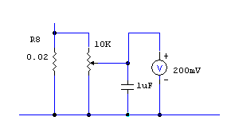
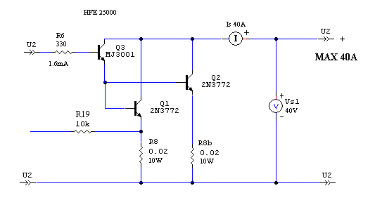

Power supplies
Electronic Load - Active electronic load.
Constant voltage or current. "DIY" by R.Chirio
Page index
{kind=link}
Foreword
For those who build power supplies, the main need is to test them for the design characteristics.
Very often the load with the correct values required by the output is not available, so resistors and/or lamps must be used until reaching the necessary value; unfortunately the required value or power is not always available, and furthermore their thermal stability is not guaranteed.
An electronic load that can be adjusted/programmed for infinite load values is very convenient.
Let's analyze what are the requirements required by practice:
Power supplies with fixed output voltage: must be tested with a constant current load.
Constant current power supplies: need a load that presents a constant voltage.
Battery charger: they need a load that provides a constant voltage to simulate the battery.
Discharge test on batteries and accumulators: must be tested with a constant current load.
Solar Photovoltaic Panels: need a load that presents a constant voltage.
Wind and hydroelectric generators DC: need a load that presents a constant voltage.
In practice to test an ATX power supply for PC, you need a load that simulates maximum current draw at the output for various voltages, from 3.3 to 5.0 to 12.0 Volt, you need a constant-current load, with the maximum value set as required for the measurement.
Testing of LED power supplies must be done with a load that presents the same voltage as the LED under current, therefore an electronic load with stabilized voltage is very useful. (Typically 3.6V to simulate the load of a 3W LED)
Electronic Load 0.40-40V 0.30-20A Constant current and voltage.
{kind=link}
January 2008.
This is a simple, robust and stable configuration.
For components refer to the enlarged circuit diagram.
Load elements are 2 MosFet IRFP250 30A 200V (180WPd) connected in parallel, must be mounted on a robust aluminum heatsink and cooled by a 12V fan. Depending on the heatsink type, you can reach over 200W dissipation. Most power MOSFETs can be used, to increase dissipable power, just parallel MOSFETs until you reach the desired power.
By modifying R2 it is possible to use even higher input values such as 60V, it is good in this case not to exceed 200W of power.
It is possible to reach powers of up to 400W, but it is necessary to use at least 4 MOSFETs to better distribute current and dissipation, the heatsink should be of the heavy profiled type at least 30cm with robust 160x160 fan.
The voltage reference (voltage reference) is represented by a TL431 connected to give 2.50V, followed by a divider of 0.40V, where the voltage comparator and the current comparator will take their reference. (This value is settable with precision through the R11, cermet trimmer multiturn)
Both comparators can drive the Mosfet load, depending on the adjustment of their respective potentiometers. With switch S1 we can therefore select operation in constant current or constant voltage.
The lighting of the red (current) and green (voltage) LEDs informs us what type of intervention is being performed.
Very important to have a 40 V voltmeter and a 20 A ammeter on the output to check values under load. For precise adjustment I recommend 10-turn precision potentiometers.
To avoid damage from short circuit it is good to put a 25/30A Fuse in series with the input.
Everything can be easily inserted inside a recovered ATX case, exploiting the 12V fan and inserting inside a 220/12V 5VA transformer to power the driving + another 2VA transformer to power the LCD instruments that require isolated and separate 12V 10mA power supply.
Before turning on, always position the current potentiometer at minimum (0) and position the voltage regulation potentiometer at full scale (maximum 40V or +).
Monitor the temperatures reached by the Power MosFets.
Useful to mount a 75°C Klixon on the radiator, connected to a buzzer, to signal a dangerous temperature, or even better to disconnect the control in case of temperatures above 75°.
By putting a 25A 100V rectifier bridge in series at the input it will be possible to directly test 50 Hz transformers with powers up to 200/400VA
....................................................
Realization
The realization of the Electronic Load involves having good knowledge of electronics, equipment and experience in electronic assembly are necessary.
And clear expertise in the use of 220V devices.
No liability is accepted for damage to things and people and for improper use of the implementation.
Version 2008.3
- It is necessary to make a CS, for convenience the same measurements and drill spacing were used, to insert everything inside an ATX case.
- For external connections provide terminals where to solder, or better a connector.
- The Power connection (20A) must be made with an adequate terminal block, or just with multiple parallel cables as happens with ATX power supplies.
- For the heatsink a CPU cooler recovered from a PC was used, in practice it proved to be an excellent solution, capable of dissipating well over 200W in a small space.
{kind=link}
Complete printed circuit board with transformer and heatsink.
{kind=link}
View of the interior after assembly completed.
On the cover you can see the potentiometers and LCD displays.
{kind=link}
Detail on the fixing of the MosFet IRFZ45.(1st version)
Using IRFP250 only 2 MosFet are enough.(2008.3)
- The heatsink is under voltage, since for good thermal efficiency, it is not convenient to mount isolators. It must therefore be fixed to the CS with isolated board straps. Use materials suitable for high temperatures (100°).
- On the small copper core it was not possible to mount more than three MOSFETs, they are still sufficient for the 20A load, in the second version only two IRFP250s were used, with the advantage of being able to increase in voltage (40V).
{kind=link}
Detail on the switches, both with center off.
{kind=link}
Detail on power connections.
- Using an ATX case with double fan (better) there is not much space for the control panel, you must therefore position the switches near the output terminal block, as well as the red LED and green LED.
- The switches must be of the on-off-on type so that in the central position they remain open.
- The output terminal strip must be of 20A type so as to be able to fix 4mmq cables equipped with ferrule.
- Inside near the R8 Current Sensing resistor the ferrites are noted, necessary to block disturbances.
{kind=link}
Detail on the sensing resistor R8 and the filter inductance.
- The current sensing resistor R8 is made with parallel constantan wire and then soldered to a terminal, its value is 0.020 Ohm. In its place you can use 5 commercial resistances of 0.1 Ohm 3W in parallel. It is positioned directly in the air flow, this to carry away the dissipated heat 8W @ 20A.
- The 1uH coil used to block HF noise is recovered from a Motherboard. The inductance value is not critical, what is important is the section of the winding, it must be able to withstand 20A.
Current reading

- To avoid installing an additional shunt for current measurement, it's easy to connect a digital voltmeter rated 200mV FS directly across the sensing resistor. To calibrate the current reading we must place in series with the load a good 20A Multimeter and simply adjust the 10K cermet trimmer to display on the millivoltmeter the same reading shown on the multimeter. The capacitor serves to reduce any noise present.
BJTs version 40A 40V

Using transistors in Darlington configuration it is possible to increase power obtaining certain savings compared to MOSFETs. The assembly made can be substituted for MOSFETs in the general scheme. R6 becomes 1k5 ohm.
The 2N3772 is a robust and reliable 20A 150W transistor, while the MJ3001 is an excellent 10A 4000 hFE Darlington. Connecting as per the circuit, the total gain is 25000, so with 1.6mA we can drive 40A. It is even possible to connect 4 x 2N3772 in parallel, to obtain a maximum current of 80A, and almost 500W dissipation, always with only one MJ3001 as the driver.
{kind=link}
Tests with Electronic Load
{kind=link}
Discharge test with 12V 7.2A/h accumulator
- To verify the capacity of the accumulator you must discharge at 0.2 C therefore in this case 7.2/5 = 1.44A.
- The test is considered finished when the battery voltage reaches 10.80V
- The discharge lasted 3h 30m equal to a real capacity of 5.04A/h
{kind=link}
Discharge test with 12V 60A/h accumulator
- To verify the capacity of the accumulator you must discharge at 0.2 C therefore in this case 60/5 = 12A.
- The test is considered finished when the battery voltage reaches 10.80V in this case read directly at the battery terminals, to avoid voltage drops across the 2.5mmq cables.
- The discharge lasted 3h 55m corresponding to a real capacity of 47A/h
{kind=link}
- With the 60A/h battery power dissipation test with the Electronic Load.
- We read 11.61V and 19.39A equal to a power of 225W
- With the fan in Turbo position 16V, after 15 min. the 60° on the internal heatsink is not exceeded.
- Clearly 2.5 mmq cables even if in silicone are not suitable for this current, you must use 6mmq.
- Excellent performance.
{kind=link}
Battery simulation with battery charger.
- The Electronic Load operating at constant voltage, green LED on.
- Various battery voltages during charging are simulated and it is verified which current can be delivered by the battery charger.
- With this battery charger under examination, we can charge 15A up to 12.5V and 7.5A with battery voltage 13.80V.
- By simulating various voltages, from 10 to 15V with 0.5V steps you can draw a graph relating to the various maximum currents that the Battery Charger can supply at the output.
© Roberto Chirio: all rights reserved.